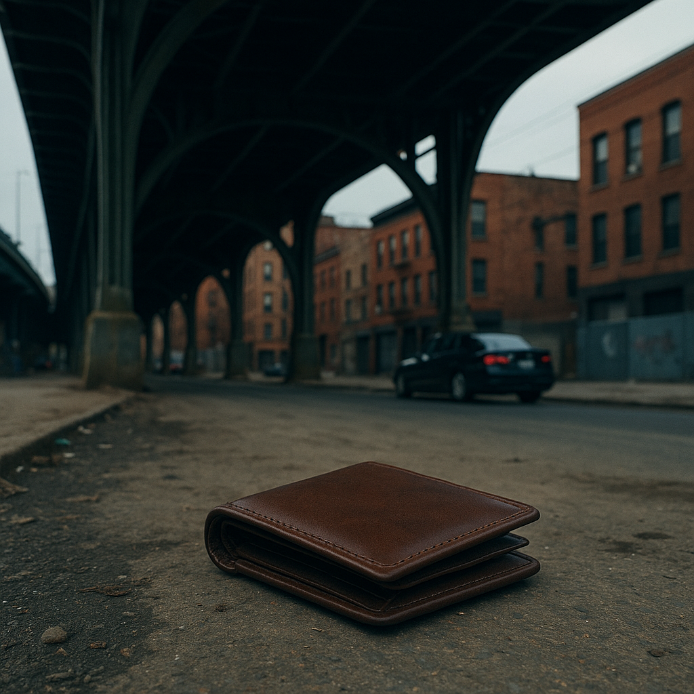

Híd alól került elő egy rejtélyes tárca a Bronxban
Vasárnap délelőtt egy járókelő különös felfedezést tett a Harlem River egyik hídja alatt: egy régi, kopott bőrtárcát talált, amelyről senki sem tudja, hogyan kerülhetett oda. Bár a történet egyszerűnek tűnhet, a tárca tartalma több kérdést vetett fel, mint amennyit megválaszolt.
A helyi lakos, Miguel Torres, aki a híd alatt sétált a kutyájával, vette észre a sárban fekvő tárgyat.
„Először azt hittem, valami szemét – de amikor megláttam, hogy bőr, és elég régi, felvettem. Belül volt néhány elázott papír, pár fénykép, és egy régi metrószelvény 1998-ból” – mesélte Torres a Bronx Daily-nek.
A tárcában nem találtak személyi igazolványt vagy bankkártyát, de volt benne egy gyűrött, kézzel írott cetli, amelyen mindössze ennyi állt: „Ne keresd többé.”
A rendőrség megerősítette, hogy az ügyet vizsgálják, bár egyelőre nincs arra utaló jel, hogy bűncselekmény történt volna. A híd alatti területet ideiglenesen lezárták, amíg a nyomozók átvizsgálják a környéket.
A környékbeliek szerint a hely hírhedt arról, hogy időnként különféle furcsaságok kerülnek elő onnan. Egy idős lakos, Mrs. Delacruz, így emlékezett:
„Évek óta látok ott fiatalokat összegyűlni éjszakánként. Sosem tudni, mit hagynak hátra. De tárcát még sosem találtak.”
A talált tárgyat jelenleg a 40. körzeti rendőrkapitányságon őrzik, és várják, hogy valaki bejelentkezzen érte.